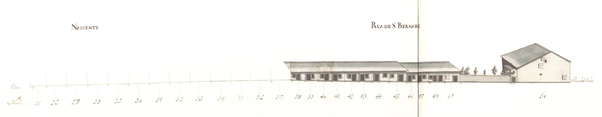

Rua de S. Barnabé
Pertencente ao complexo que tinha o centro na praça do Gavião, ligava as ruas de Santo André e da Oliveira.
Artéria um pouco marginal a este conjunto, tem o seu prazo mais antigo em 1743.
Dividida em lotes, como todo o conjunto denominado de Quinteiro ou Gavião, ou, actualmente de campo Novo, tinha apenas ocupados com casas 18 dos 31 terrenos preparados para edificações. O restante espaço disponível, aqui assinalado com os n?s 8-20 e 23-24, eram as entradas ou muros de limite dos quintais da rua dos Chãos de Cima.
As 20 casas desenhadas no Mappa são todas térreas, muito simples, do tipo de porta com janela lateral, mas com as «molduras» de pedra visíveis. Todas estas construções são prazos do Cabido.
Mantém o nome de S. Barnabé.Praça do Gavião - Nascente.
.jpg)
Praça do Gavião - Nascente.
- Casa 1: Enfiteuta - N/A, Foro - N/A
- Casa 2,3 e 4: Enfiteuta - D. Agostinha Maria de Barros, enfiteuta principal do prazo do casal dos Chãos ou Quinteiro., Foro - N/A
- Casa 5: Enfiteuta - D. Agostinha Maria de Barros, enfiteuta principal do prazo do casal dos Chãos ou Quinteiro., Foro - N/A
- Casa 6 e 7: Enfiteuta - N/A, Foro - N/A
- Casa 8: Enfiteuta - N/A, Foro - N/A
- Casa 9: Enfiteuta - N/A, Foro - N/A
- Casa 10: Enfiteuta - N/A, Foro - N/A
- Casa 11: Enfiteuta - N/A, Foro - N/A
- Casa 12: Enfiteuta - N/A, Foro - N/A
- Casa 13: Enfiteuta - N/A, Foro - N/A
- Casa 14: Enfiteuta - N/A, Foro - N/A
- Casa 15: Enfiteuta - N/A, Foro - N/A
- Casa 16: Enfiteuta - N/A, Foro - N/A
- Casa 17: Enfiteuta - N/A, Foro - N/A
- Casa 18: Enfiteuta - N/A, Foro - N/A
- Casa 19: Enfiteuta - N/A, Foro - N/A
- Casa 20: Enfiteuta - N/A, Foro - N/A
- Casa 21: Enfiteuta - N/A, Foro - N/A
- Casa 22: Enfiteuta - N/A, Foro - N/A
- Casa 23: Enfiteuta - N/A, Foro - N/A
- Casa 24: Enfiteuta - N/A, Foro - N/A
- Casa 25 a 37: Enfiteuta - D. Agostinha Maria de Barros, enfiteuta principal do prazo do casal dos Chãos ou Quinteiro., Foro - N/A
- Casa 38 a 49: Enfiteuta - D. Agostinha Maria de Barros, enfiteuta principal do prazo do casal dos Chãos ou Quinteiro., Foro - N/A
- Casa 50: Enfiteuta - D. Agostinha Maria de Barros, enfiteuta principal do prazo do casal dos Chãos ou Quinteiro., Foro - N/A